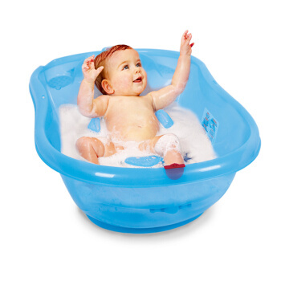
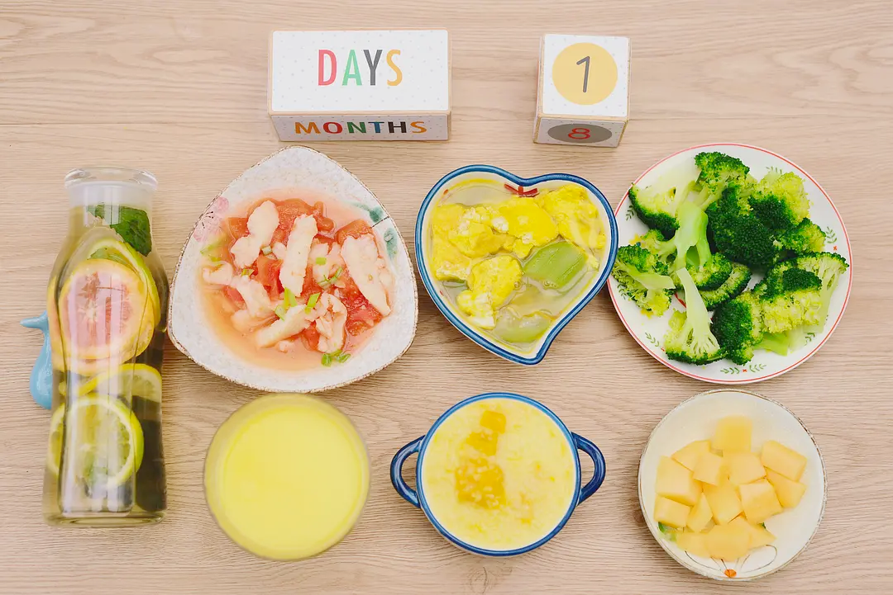
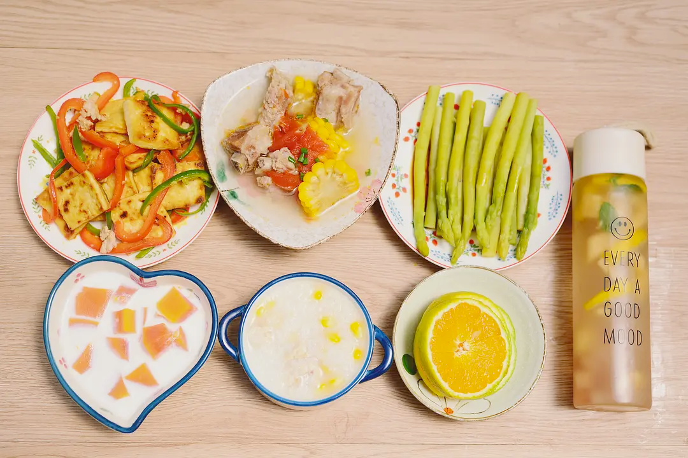
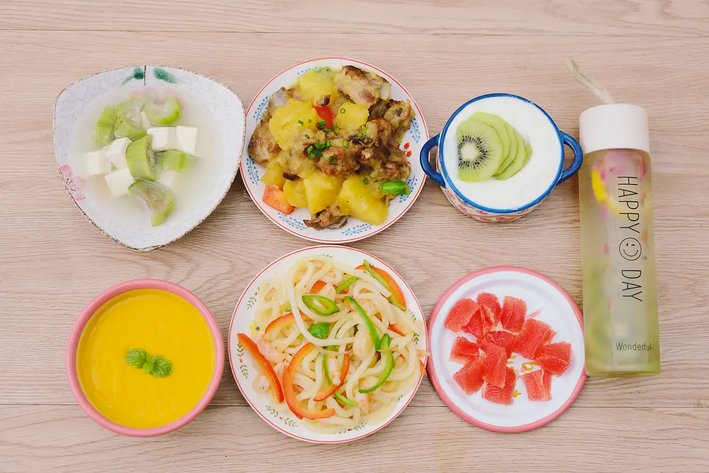
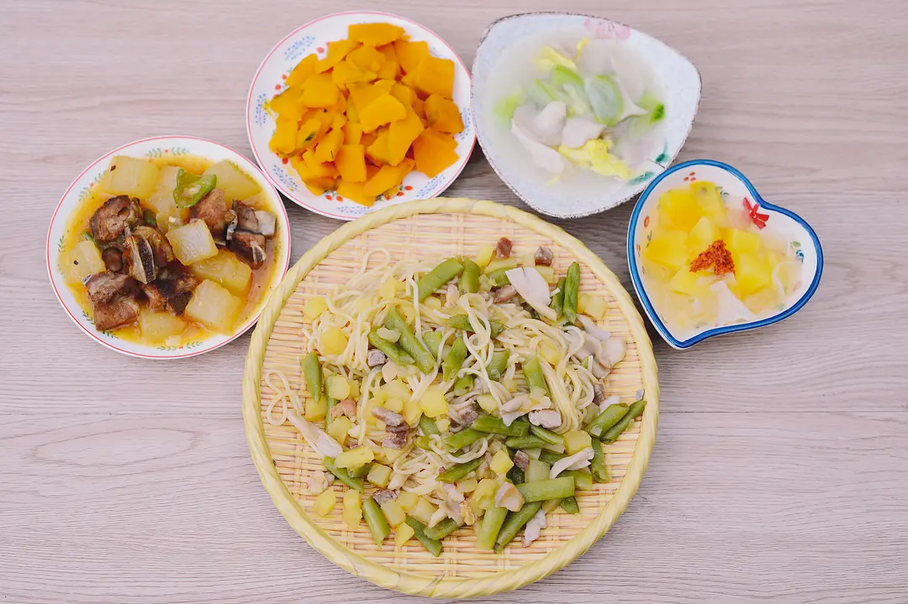

照顾月子
首先先看一下，42天月子期间，需要注意的主要内容。
42天坐月子日程表
今天给大家分享一下来自五星级月嫂的笔记包含42天坐月子日程表及新生儿一些护理禁忌，学会这些自己带娃非常简单~
（1）月子饮食
-
产后第一餐不可油腻、大鱼大肉大补，建议小米粥、瘦肉粥、蒸水蛋、青菜面条等易消化食物
-
月子期间少吃多餐，多吃蔬菜、水果（寒性除外），品种越多，颜色越多，营养越丰富。
-
产后3-4天会出现生理性涨奶期，所以最好一周后才喝发奶的汤，避免堵奶造成乳腺炎
-
适量喝红糖水，不可超过10天，容易增加血性恶露
-
忌油腻、辛辣刺激、熏制过咸、生冷的食物
-
忌食或少食冬瓜、白萝卜、茄子、西瓜、梨、芒果等寒性果蔬
（2）产妇月子护理
1、不提重物、不久蹲，尽量少抱宝宝，防止子宫脱垂
2、可吹空调，穿长袖长裤，不受风、不受冷，每天房间开窗通风时，可到客厅活动
3、可淋浴、可洗头，时间以5-10分钟内为佳，关掉卫生间门窗，开换风系统，洗后吹风机热风吹干头发
4、产后可正常刷牙，用温水，使用软毛牙刷
5、便后用私处清洗器装温开水冲洗私处，避免不洁造成感染
6、产后第30天、第442天去医院检查恢复情况
7、产后42天-6个月是盆底肌、腹直肌恢复的最佳时机，可以凯格尔运动用G动手机应用改善漏尿等产伤问题。注意不能做仰卧起坐、爬楼梯、提重物等体力劳动。
8、一定要保证睡眠充足，保持好心情
（3）新生儿护理
1、喂奶：按需喂养，不要等宝宝太饿了才喂奶，宝宝吃得急容易呛奶，喂奶后要给宝宝拍嗝，如果不拍出来，宝宝容易溢奶
2、喂养：出生15天后即可补充维生素AD；母乳喂养宝宝6个月内，不需要给宝宝吃其他食物，6个月以后开始添加辅食
3、抱姿：一个月内的宝宝横抱/摇篮抱/靠膝抱；二个月大的宝宝可以斜抱；三个月大的宝宝可竖抱或托抱
4、睡姿：1-3️个月新生儿可不用枕头，两侧换睡，一防呛奶到气管，二防睡扁头型
练习抱小孩
从床上试抱开始练习的，就算跌下来也不会太受伤，一个手肘护住颈部和头部，另一个手护住屁股。护住颈部这个动作之后会经常做，因为给他洗澡全程都要保护着，宝宝的脖子还太柔软。
换尿不湿
（1）防侧漏
-
防止腿边侧漏： 一个是换好后，要把屁股到腿那里的第二圈稍微顺一下，另外是封口条可以往腿部斜一点，不要那么正，就不容易从腿部漏出来了
-
防止背部侧漏：换的时候背后部分到肚脐上一点，就不容易从背后漏出来。
（2）更换频率
可以多接几次尿，这样夜里可以多睡一点，换尿不湿也容易把孩子惊醒。
（3）擦拭方式
用棉柔巾，一张大的蘸取金银菊花水擦拭，比湿巾水分多，好擦干净。再用棉柔巾擦干，轻松许多，红屁屁的状况也有减轻。擦干净后可以在屁股上涂一点护臀膏，可以缓解红屁屁。
注意擦干生殖器隐蔽部位的水，比如男宝蛋蛋下面的水要擦干。
婴儿洗澡
（1）洗澡盆选择
全程护住颈部，用更大的盆子洗，这样就算孩子满月了，用那个盆也不会觉得小。因为小朋友长得是很快的，如果手脚打不开会觉得不舒服。我们因为每次舀水觉得麻烦换了个小盆，结果原地闲置了，大家都不舒服。而且由于盆子小，宝宝脖子会更仰起来，增加扭伤的危险。

可以选用这类洗澡盆，婴儿可以躺到上面，不需要人工全程护颈。
（2）脐带消毒
刚开始的时候，要注意还未脱离的脐带消毒。先吸干水分，用酒精或碘伏，用棉签顺着肚脐擦拭。
注意：
- 脐带未脱落时，先用棉柔巾擦干净皱褶里的水分，用棉签粘酒精或碘伏顺着肚脐擦拭消毒，每天3次消毒，每次基本4跟棉签。脱落后2～3天内，也要消毒。
- 要使用婴儿专用的沐浴露；
- 选择带帽子的浴巾，可以保暖头部。
（3）室温和水温
室温：房间温度宜在24～26°C，建议26°C，月子期间宝宝和宝妈都比较脆弱，稍微暖和一点比较好。
洗澡水温：冬季应为38°C～39°C，夏季为37°C～38°C，备水时温度稍高2°C～3°C，用手腕内侧皮肤测试时，以不烫手为宜。 浴盆内备温热水（先放冷水再放热水）至浴盆2/3处，用水温计或手腕内侧皮肤测试水温。
（4）澡后按摩保养
洗完后，可以用按摩油给小孩做排气操，具体很多网上视频教学的。做完排气操加喂奶后拍嗝，宝宝不容易打嗝或吐奶，会比较舒服。
婴儿穿衣
医院或是护工学到的经验是，孩子要养得凉，基本和大人穿一样就行了。
如果外面40度大人穿短袖，而孩子却穿着长袖还盖被子，很容易被捂出湿疹。得了湿疹孩子很不舒服，家长也头痛，如果一直不好，还有可能无法顺利打预防针。
就算不长湿疹，也有可能长一种油状的奶咖，使用金银花和菊花熬水来轻轻擦拭，再涂上护肤油，过几天就好了。最开始我还以为是孩子脱皮呢，结果才知道有这个，很容易糊住，也不舒服。
晚上照顾宝宝
建议：宝爸全程陪伴宝妈，宝妈的情绪是第一位的。
刚开始宝宝大概两个半小时喝一次，例如晚上12点算起，到早上8点。至少喂3次，通常30分钟。还伴随着换尿不湿和适量哄睡所用时长，基本就是很容易通宵不睡。
宝妈负责喂奶，宝爸负责换尿不湿、哄睡、吸奶器消毒、换电视剧、按摩背部和腰部、倒热水或者弄点小零食。
后期再买个温奶器，这样可以尽量让宝妈多休息。
新生儿常见问题
（1）新生儿老打嗝？
（2）新生儿哭闹不止怎么办？
（3）新生儿脱皮
清洁工作
（1）身体清洁
最开始在医院，产后那几天真的很难熬，恶露不断，翻身又难，不断的要换卫生巾和产褥垫。
我也被骂了好多次，只恨自己没有提前补课怎么给老婆换卫生巾。
如果看到这篇文章的男士，可以先和孕妈实践学习一下。实在害羞就跟我一样，拿个佩奇玩偶来试也行哈哈。
回家以后就好很多，宝妈可以自己清洁，最开始恶露有反复，到30天还不尽，我们去查大概要42天，果然到了这两天基本已经好了，她做产后42天的回诊也没有太大问题。
（2）家务清洁
常见的洗碗、洗衣服、洗尿布、宝宝衣服、宝妈衣服等。
月子餐怎么办？
（1）推荐月子餐
合理的月子餐是母乳正常的重要保障。 全文参考：30天不重样月子餐，制作心得与技术总结 ，笔记如下。
南北习俗不同，总的来说，顺产一般30天，刨腹产一般42天。
以顺产30天周期为例：前7天为清汤寡水期，7-14天为缓冲期，后半个月就正常吃喝期。
day1
前一周刚刚做完手术，身体很虚弱。如果这时候只惦记母乳的产出，而忽略生理上的胃口变差，很容易造成产妇的心情拥堵。
要注意月子餐并不是从回家算起，而是产后就开始了。
回家后第一餐如下，接近无油，足够多的水分。
针对胃口变差，可以做酸香口味的番茄龙利鱼，如果无油西兰花不好吃的话，搭配丝瓜蛋汤就容易些。这里的食物水分都比较足，从生产母乳的角度，多增加水分很有用处。 
这一周要避免油腻，各种下奶汤还请注意。比如常见的土鸡汤、猪蹄汤，都不建议入口。作者亲耳听见隔壁二胎刨腹产的妈妈，因为喝了足够的油汤立刻堵了，半夜翻来覆去的哀嚎。
前三天会生理性涨奶，再加上开奶的过程有疼痛，常有奶水不足的情况发生。
很容易让家长们觉得是不够，然后下奶偏方一拥而上，很容易引发胰腺炎。听说如果乳腺炎反复发作，不亚于生孩子的阵痛。食物应该用来动态调整奶量，不是一味补充就是好的。
来些前一周的食物，增加水果和甜品、饮品，它们富含水分，也让口感丰富，不容易产生排斥。
day3
day3：木瓜牛奶+番茄玉米排骨汤+青红椒老豆腐+鲜玉米鸡丝粥+桃香蜜瓜水+白灼芦笋+甜橙片。 
day6
丝瓜炖豆腐+土豆烧排骨+猕猴桃酸奶+南瓜浓汤+虾仁乌冬面+玫瑰猕猴桃水+葡萄柚粒 
7-14天推荐菜单
清甜椰子鸡汤
整个月子餐期间，我做鸡汤都很少，一是因为羊不喜欢喝，而是觉得没有必要这么补。这里推荐一个很适合月子期间的清甜椰子鸡汤，广式口感。制作的时候整锅汤只用一个土鸡腿，制作时还要去皮进一步减少油腻。
木瓜排骨汤
另外推荐这个木瓜排骨汤，水果入菜本身会增加食欲，减少排骨而增加水的比例。不要为了补就动不动半只鸡来熬汤，一斤排骨来熬汤，这样油腻过度的汤水，不是靠舀去表面浮油能解决的。
鲫鱼豆腐汤
传统的月子餐汤水，我比较推崇鲫鱼豆腐汤，一个是本身油少，第二个加了豆腐吃起来也很好吃，但也是推荐一周后再给产妇食用。
（2）月子餐禁忌
由于产妇身体的特殊性，充满着各种【不能】，在各种不能包围下，人很容易变得【不能】开心。在计划这30天的饮食时，主要以宝妈的口味来安排食物，就算是仙丹她不吃我也就不安排。除开口味的个人定制，另外就是真实的禁忌。
禁生冷
首先是生冷。我的理解是，生是没有做熟透的食材，而冷，我理解为冷藏和冷冻。所以水果能吃吗？当然可以，不要吃冷藏的就行了。只要入口，保证至少是常温的就行，当然本身水果也有寒性热性之分，寒性的也要少吃。
所以月子餐里并没有清淡的沙拉，因为主要是生的蔬菜。而理解了冷，我就做了常温的酸奶、布丁、各种水果饮、在夏天它们给人的印象常是冷的，放到常温也就可以吃了。
比如杨枝甘露，我一个正常饮食的人也很难拒绝啊，更不要说孕妈了~
比如盆栽酸奶，以前出去逛街自己也会买来吃，月子餐做起来，胃口就会舒服很多啦。
忌辛辣
除开生冷，接着是辛辣。对爱吃辣的人这个特别不容易，但也得忍。为了让心理过得去，我还是经常加辣椒，只是使用没有什么辣度的大青椒和红甜椒，下面这种双椒炒肉，看起来辣椒多，其实一点都不辣。
上面说到的其实是辣，实际在制作月子餐过程中，我还排除了回奶的花椒，以及混合的五香调料，郫县豆瓣我的真爱也都排除掉了。
实际整个月子餐制作中，我用到的调料，基本只有姜片、盐、糖，连料酒都没用。
这一餐有红烧、清蒸、焖面、基本调料只用了糖和盐，但也是很好吃的。 
不建议红糖和醪糟
从食材来说，不建议吃红糖和醪糟。各地风俗不同，很多月子餐会有数不清的红糖醪糟蛋，但我在四川这边，不管是在生产医院，社区医院，还是回访电话，都不建议产妇吃。红糖会增加恶露的不尽感，而醪糟含有酒精，会让孩子睡着。虽然月子书上说经过蒸煮没问题，但我还是把它们都排除了，实际操作中我觉得稍微吃点也没啥，不要逮着一天吃十几个醪糟蛋就行了。
说到禁忌还要说一点，我在写月子餐菜谱的过程中，几乎每篇都会有人提出疑问。有说不能吃盐，有说啊还能吃粥，有说不能吃水果，每个人都有他心中的禁忌。如果真的遵守大家口中的所有禁忌来做饭，那宝妈只能喝一个月包治一切的热水了。
总得来说除了医学上建议避免的生冷、辛辣、增加恶露、酒精类的东西，其它少量吃点，我都觉得没问题，不用那么紧张。
（3）月子餐食物分类
在制作月子餐时，我主要是按照这个分类来安排菜谱：主食+荤菜+素菜+汤水+饮品+水果，如图所示：
主食
首先说主食。在月子餐书上，都很推崇杂粮主食。比如杂粮粥或者杂粮干饭，像下面这种。我主要买的杂粮有：小米、燕麦、玉米渣、糙米、这几种，平时煮饭混合一些即可。杂粮可以增加母乳营养的丰富，如果只喝鸡汤，很大程度增加是母体的脂肪。
不试不知道，原来还有这么多好吃的主食做法。
如：南瓜小米粥、麦香杂粮饭、焖饭、炒饭、焖面、饭团、豆角焖饭、金华火腿炒饭、土豆肉丁焖面、香菇鸡米芽菜饭团等。
荤菜
接着是荤菜。我首先主要做的是红烧菜，红烧会比较软，比如土豆、冬瓜，适合产后孕妇不好的牙口。制作的时候，我没有用特别多的肉，甚至经常使用肉末，而增加红烧菜里的素菜含量。相信我，产妇没那么缺营养，缺的是陪伴。
【红烧】代表菜有：土豆烧排骨、黄焖鸡、肉末茄子
除了红烧，蒸这个技法也是我喜欢的，它保留了营养也不油，很适合月子餐食用。看着红艳艳，其实只是大红椒碎，吃起来不辣的。更多的炒、煎制作的荤菜，可以看文末的菜谱链接。
【蒸】代表菜有：豉汁蒸排骨、芽菜肉末蒸豆腐、双椒豉汁蒸鸡翅
素菜
接着说素菜，我用来清炒最多，也有白灼的方法，偶尔做做土豆泥。在制作的时候，尽量注意色彩的搭配，这样看起来赏心悦目，吃起来也会脆甜鲜香。 代表菜有：荷塘小炒、香煎土豆泥、西葫芦炒鸡蛋、白灼芦笋
甜品
接着是甜品，平时我不做甜品，这次专门为了月子餐学习了很多。比如红豆芋圆、牛奶雪燕、牛奶布丁还有甜软的木瓜牛奶。想要产妇喝牛奶，做甜品是很好的方法。羊不太喜欢喝牛奶，但做成这些食物，她就比较能喝了。我相信也有一些人不喜欢单独喝牛奶，不妨尝试下这些做法，会比较容易接受。
代表甜品：桂花红豆芋圆、牛奶雪燕蔓越莓羹、猕猴桃酸奶、蒸牛奶布丁、木瓜牛奶
饮品
清甜玉米汁、核桃花生露、桃香蜜瓜水、葡萄柚养乐多
（4）月子餐细节
最后说一下月子餐的周边细节：
每天网购食材，制作需要两小时，写菜谱需要一小时。我只制作一顿大餐，剩下吃老妈做的正常的食物。据说月子餐一天要五餐，但它们会有强弱差别，正餐和下午茶分开，宵夜宝妈也吃得不多，但如果是很容易饿的体质，就需要补充更多，按需供应。
我的感觉是坐月子不是喂猪，就是吃点边角料，我这一个月下来都长了五斤，要是顿顿都有鸡汤和大肉，那大夏天还不把我补得喷鼻血。我真的觉得月子期间最缺的不是营养，而是完整的睡眠和陪伴。现在我白天除了喂奶，尽量都把宝妈赶到另外房间去强制休息，因为我们要起来三次喂奶，这还是宝宝不吵觉比较天使的状态。
现在宝宝满月了，我也停止制作月子餐，但后续会继续营养好吃的饭，因为母乳喂养要持续半年以上。不管怎么样，吃得有选择，总是让人开心的事。未来等宝宝长大点我会给他做辅食，开启新的美食旅程。
（5）30天月子餐完整版
最后附上30日月子菜谱的合集，不仅月子可以吃，平时不想吃辣的时候，随便点开一篇就完事儿了。
接着是饮品。刚回来母乳正处于开奶期，每顿除了甜品与汤的水分，还额外增加一个饮品。这样就让宝妈在不知不觉中就喝了很多水，这种产奶于无形是最好了。注意甜品和饮品都不要冷藏，要是常温或者热的。
30天好吃月子餐菜单（完整版）：